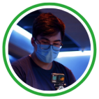

L'association :
Association développement durable à l'EFREI Paris Panthéon Assas Université 🌿🍃
Symbioz est l'association de développement durable du campus, dont le but est de sensibiliser les étudiants sur ses enjeux via diverses activités, en dehors de toute considération politique et grâce au soutien d'entreprises et d'Efrei Paris .
Elle est née de la prise de conscience, chez les élèves ingénieurs de l'Efrei Paris, de l'impact environnemental de l'industrie informatique.
L'équipe pour le mandat 2023 - 2024
La passation a été votée le 04 avril 2023 et a été effectuée en préfecture. Le
nouveau bureau se compose à présent de :
-
Présidente : Adèle CHAMOUX - L1 PGE
-
Vice-Présidente : Lisa RAOUL - M1 Digital Transformation
-

Secrétaire : Aurélien SARR - B3 Cybersécurité
-
Trésorier : Lucas KOCOGLU - L2 PGE
Projet pour le mandat 2023 - 2024
Demande de subvention pour 2023 - 2024 : 15 660,00€
- Projets évènementiels
- Le WEI
Ce week-end ayant lieu en début d'année, est le premier événement marquant de l'année
de tous les étudiants de l'Efrei. Avoir des membres de notre bureau sur place ne peut être
que bénéfique pour notre association. Convaincre les étudiants, notamment les L1
nouveaux, les sensibiliser à l'utilité de rejoindre Symbioz est primordial. Symbioz effectuera
une remise sur les places du WEI pour ses membres qui y participent, et y animera un stand
lors de ce week-end festif.
Estimation budgétaire: 1 000€
-
La semaine des associations
Comme tous les ans, cette semaine des associations est essentielle pour toutes les
associations de l'Efrei, y compris bien évidemment Symbioz. D'autant plus que nous voulons
augmenter grandement notre effectif pour effectuer au mieux nos projets à venir, cette
semaine sera une semaine nous permettant d'augmenter notre notoriété. Au programme,
vélo smoothie et petit-déjeuner pour les nouveaux étudiants.
Estimation budgétaire: 300€
-
La Journée de la Santé, Sustainable Day, JPO et autres évènements
Vu le succès que la journée de la Santé a eu cette année passée, nous souhaitons
renouveler cette journée et y ajouter le Sustainable Day. Petits-déjeuners, partenariats avec
d'autres associations, recettes healthy, jeux (quiz autour du développement durable), vélos à
smoothie/ gouter, sont quelques-unes des activités que nous avons en tête pour les
journées de ce type. .
Tout au long de l'année, Symbioz sera amené à participer sur plusieurs événements comme
des JPOs, des fresques du climat/numérique, et autres journées des autres associations…
Estimation budgétaire: 1 750€
-
Journées Clean Walk dans Paris et sa banlieue
Un bon moyen de rassembler des étudiants engagés dans la lutte contre le changement
climatique est en les appelant à se mobiliser dans les rues pour des marches de ramassage
de déchets. L'initiative ayant déjà été prise dans d'autres écoles d'ingénieurs du numérique
(comme l'Eseo), il serait intéressant d'en organiser avec celles-ci. Que ce soit dans Paris
même, à Villejuif, ou autre part dans la banlieue parisienne, ce concept nous semble
accessible.
Estimation budgétaire pour 4. & 5. : 800€
IMPORTANT : cette partie du budget n'est pas demandée dans la subvention et sera
prise en charge par l'excédent 2022-2023.
-
Tables rondes/conférences avec des experts écologiques
La sensibilisation et la conscientisation sur des sujets variés tels que le changement
climatique, l'alimentation équilibrée, le numérique responsable, et encore plein d'autres se
font le mieux au travers de conférences. Accueillir au sein du campus des experts reconnus
de tous pour faire des discours en amphi ou autour de tables rondes est ce que nous avons
en tête.
Estimation budgétaire pour 4. & 5. : 800€
IMPORTANT : cette partie du budget n'est pas demandée dans la subvention et sera
prise en charge par l'excédent 2022-2023.
-
Les ventes subventionnées des paniers BIO
Nous ne comptons évidemment pas nous arrêter en si bon chemin sur un concept qui
fonctionne si bien à l'Efrei. C'est pourquoi les paniers de fruits et légumes BIO de saison que
nous proposons grâce à notre partenaire: le primeur de Villejuif, continueront d'affluer
régulièrement sur le campus. Nous prévoyons de relancer trois campagnes sur l'année.
Estimation budgétaire: 800€
- Projets internes
-
Cohésions
Comme dans toutes les associations et comités en général, la bonne entente au sein du
groupe est cruciale pour le bon déroulement de l'année, et le partage d'idées. C'est
pourquoi, de la même façon que l'année 2022-2023, nous organiserons des cohésions pour
intégrer les nouveaux membres et renforcer les liens entre ceux qui existent déjà.
Estimation budgétaire: 400€
-
Reprographie pour Éthique Mag / EcoNews
Nous imprimons nos affiches publicitaires dans l'idée de les afficher sur le campus grâce au
service de reprographie de l'école.
Estimation budgétaire: 0€
-
Développer des partenariats avec d'autres associations
Pour développer nos projets et les construire avec d'autres associations, nous avons pour
objectif pendant ce mandat de travailler activement avec les associations telles que
Millésime, Fablab et bien d'autres.
Avec le Fablab nous souhaitons mettre un point d'honneur sur les points suivants :
écoconception, sensibiliser à la réduction d'usage de matériaux et présentation de la fresque
du climat et former à la sensibilisation de recherche de solutions pour être plus éco friendly.
Autre idée, afin d'inciter à la réparation et la prolongation de la durée de vie des objets du
quotidiens, nous proposons de subventionner aux étudiants une partie de l'achat des
composants qu'ils viendront faire réparer à l'occasion de Repair Café.
Estimation budgétaire: 800€
-
Frais bancaires
Le compte bancaire de l'association est actuellement basé chez Crédit Agricole et fait l'objet
de frais de tenue de compte, frais de carte bancaire ainsi que des commissions de
mouvement.
Estimation budgétaire: 150€
- Projets pour le campus
-
Machine et poubelle pour le tri sélectif LEMON TRI
Réparties sur le campus de République se trouvent des poubelles/ machines “LemonTri”
permettant d'obtenir, si l'on a de la chance, des jetons pour chaque bouteille/ canette
déposée. Jetons permettant à leur tour d'obtenir des récompenses de la part de Symbioz
(Dans les récompenses, nous prévoyons une place pour le WEI 2023 et une place pour le
voyage BDS, des places UGC, des sets de couverts, des gourdes et bien plus encore !)
Nous aimerions ajouter une de ces machines sur le campus de Gorki et le nouveau campus
de Bordeaux afin d'inciter davantage les étudiants au tri sélectif.
Estimation budgétaire: 1 000€
IMPORTANT : cette estimation ne comprend pas l'achat de machine de tri Easy+
LemonTri pour Gorki et Bordeaux, nous avons contacté LemonTri pour plus
d'information, en attente de leur retour.
-
Renouvellement du matériel (écocups, stickers, pulls, goodies)
Utile lors des JPO, en récompense pour les jetons LemonTri, pour des publicités diverses
lors des évènements. Quelques exemples de goodies: pulls, gilets, casquettes, stickers,
gourdes,... Acheter une mascotte; quoi de mieux qu'une mascotte pour représenter son
association et marquer les esprits de manière efficace? Nous avons déjà trouvé notre cible:
le Pokémon nommé “Symbios”!
Estimation budgétaire: 800€
-
Revégétalisation du campus
Mur végétal? Potager en hauteur? Fleurs? Refaire la pelouse? Le but est de rendre le
campus plus vert et de créer par la suite un pôle “jardinage” au sein de l'association.
L'objectif est dans un premier temps d'exploiter les parcelles de terre situées côté gauche de
l'allée pompier.
Estimation budgétaire: 1 000€
-
Projet d'antenne à Bordeaux
Nous prévoyons d'étendre l'association Symbioz jusqu'au campus de Bordeaux pour y créer
une antenne. Aujourd'hui, dans une école axée sur le numérique et les technologies futures,
la lutte pour le développement durable se doit d'être partout ! Surtout à l'Efrei, l'école des
ingénieurs de demain.
Nous prévoyons de nous rendre sur place à Bordeaux pour faire avancer les choses au plus
vite. Approvisionner leur campus avec RollUp/ Kakémono, autocollants, écocups, … mais
aussi financer l'achat d'un vélo smoothie !
Estimation budgétaire: 7 660€, comprenant les frais de déplacements.